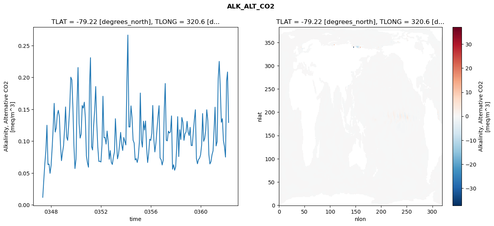
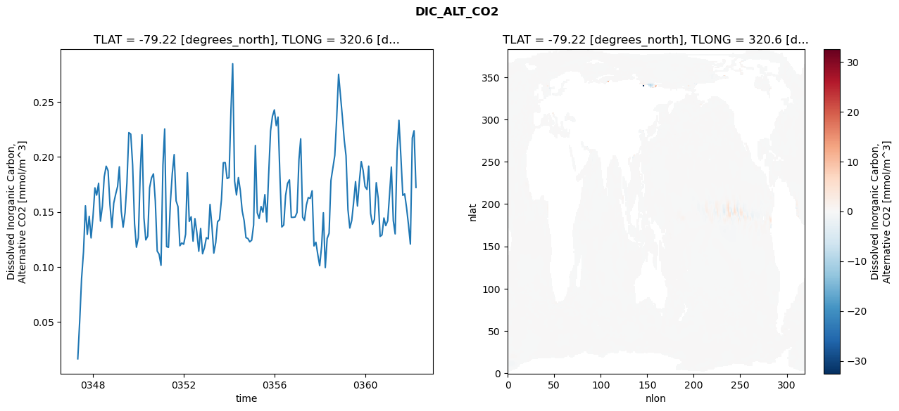
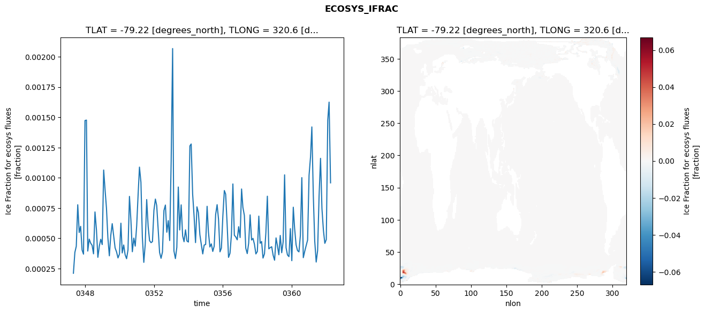
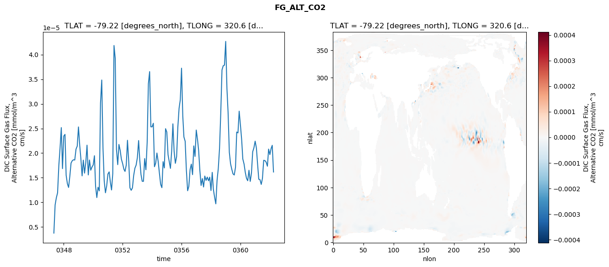

glb-dor_North_Atlantic_basin_045_1999-04-01_00181#
Simulation details#
Case: smyle.cdr-atlas-v0.glb-dor_North_Atlantic_basin_045_1999-04-01_00181.001
Basin: North_Atlantic_basin
Polygon: 45.0
Start date: 1999-04
Show code cell source Hide code cell source
import xarray as xr
import matplotlib.pyplot as plt
Show code cell source Hide code cell source
zarr_store = "/path/to/zarr/store"
# Parameters
zarr_store = "/global/cfs/projectdirs/m4746/Projects/Ocean-CDR-Atlas-v0/data/validation/smyle.cdr-atlas-v0.glb-dor_North_Atlantic_basin_045_1999-04-01_00181.001.validation.zarr"
Show code cell source Hide code cell source
%%time
ds_o = xr.open_zarr(zarr_store).compute()
ds_o
CPU times: user 701 ms, sys: 398 ms, total: 1.1 s
Wall time: 1.28 s
<xarray.Dataset> Size: 2MB
Dimensions: (nlat: 384, nlon: 320, time: 180)
Coordinates:
TLAT float64 8B -79.22
TLONG float64 8B 320.6
ULAT float64 8B -78.95
ULONG float64 8B 321.1
* time (time) object 1kB 0347-05-01 00:00:00 ... 0362-04-01 0...
z_t float32 4B 500.0
Dimensions without coordinates: nlat, nlon
Data variables:
ALK_ALT_CO2_diff (nlat, nlon) float32 492kB nan nan nan ... nan nan nan
ALK_ALT_CO2_rmse (time) float64 1kB 0.01186 0.03927 ... 0.2085 0.1293
DIC_ALT_CO2_diff (nlat, nlon) float32 492kB nan nan nan ... nan nan nan
DIC_ALT_CO2_rmse (time) float64 1kB 0.01633 0.05102 ... 0.2239 0.1723
ECOSYS_IFRAC_diff (nlat, nlon) float32 492kB nan nan nan ... nan nan nan
ECOSYS_IFRAC_rmse (time) float64 1kB 0.0002111 0.0003833 ... 0.0009583
FG_ALT_CO2_diff (nlat, nlon) float32 492kB nan nan nan ... nan nan nan
FG_ALT_CO2_rmse (time) float64 1kB 3.762e-06 9.488e-06 ... 1.617e-05xarray.Dataset
- nlat: 384
- nlon: 320
- time: 180
- TLAT()float64-79.22
- long_name :
- array of t-grid latitudes
- units :
- degrees_north
array(-79.22052261)
- TLONG()float64320.6
- long_name :
- array of t-grid longitudes
- units :
- degrees_east
array(320.56250892)
- ULAT()float64-78.95
- long_name :
- array of u-grid latitudes
- units :
- degrees_north
array(-78.95289509)
- ULONG()float64321.1
- long_name :
- array of u-grid longitudes
- units :
- degrees_east
array(321.12500894)
- time(time)object0347-05-01 00:00:00 ... 0362-04-...
- bounds :
- time_bound
- long_name :
- time
array([cftime.DatetimeNoLeap(347, 5, 1, 0, 0, 0, 0, has_year_zero=True), cftime.DatetimeNoLeap(347, 6, 1, 0, 0, 0, 0, has_year_zero=True), cftime.DatetimeNoLeap(347, 7, 1, 0, 0, 0, 0, has_year_zero=True), cftime.DatetimeNoLeap(347, 8, 1, 0, 0, 0, 0, has_year_zero=True), cftime.DatetimeNoLeap(347, 9, 1, 0, 0, 0, 0, has_year_zero=True), cftime.DatetimeNoLeap(347, 10, 1, 0, 0, 0, 0, has_year_zero=True), cftime.DatetimeNoLeap(347, 11, 1, 0, 0, 0, 0, has_year_zero=True), cftime.DatetimeNoLeap(347, 12, 1, 0, 0, 0, 0, has_year_zero=True), cftime.DatetimeNoLeap(348, 1, 1, 0, 0, 0, 0, has_year_zero=True), cftime.DatetimeNoLeap(348, 2, 1, 0, 0, 0, 0, has_year_zero=True), cftime.DatetimeNoLeap(348, 3, 1, 0, 0, 0, 0, has_year_zero=True), cftime.DatetimeNoLeap(348, 4, 1, 0, 0, 0, 0, has_year_zero=True), cftime.DatetimeNoLeap(348, 5, 1, 0, 0, 0, 0, has_year_zero=True), cftime.DatetimeNoLeap(348, 6, 1, 0, 0, 0, 0, has_year_zero=True), cftime.DatetimeNoLeap(348, 7, 1, 0, 0, 0, 0, has_year_zero=True), cftime.DatetimeNoLeap(348, 8, 1, 0, 0, 0, 0, has_year_zero=True), cftime.DatetimeNoLeap(348, 9, 1, 0, 0, 0, 0, has_year_zero=True), cftime.DatetimeNoLeap(348, 10, 1, 0, 0, 0, 0, has_year_zero=True), cftime.DatetimeNoLeap(348, 11, 1, 0, 0, 0, 0, has_year_zero=True), cftime.DatetimeNoLeap(348, 12, 1, 0, 0, 0, 0, has_year_zero=True), cftime.DatetimeNoLeap(349, 1, 1, 0, 0, 0, 0, has_year_zero=True), cftime.DatetimeNoLeap(349, 2, 1, 0, 0, 0, 0, has_year_zero=True), cftime.DatetimeNoLeap(349, 3, 1, 0, 0, 0, 0, has_year_zero=True), cftime.DatetimeNoLeap(349, 4, 1, 0, 0, 0, 0, has_year_zero=True), cftime.DatetimeNoLeap(349, 5, 1, 0, 0, 0, 0, has_year_zero=True), cftime.DatetimeNoLeap(349, 6, 1, 0, 0, 0, 0, has_year_zero=True), cftime.DatetimeNoLeap(349, 7, 1, 0, 0, 0, 0, has_year_zero=True), cftime.DatetimeNoLeap(349, 8, 1, 0, 0, 0, 0, has_year_zero=True), cftime.DatetimeNoLeap(349, 9, 1, 0, 0, 0, 0, has_year_zero=True), cftime.DatetimeNoLeap(349, 10, 1, 0, 0, 0, 0, has_year_zero=True), cftime.DatetimeNoLeap(349, 11, 1, 0, 0, 0, 0, has_year_zero=True), cftime.DatetimeNoLeap(349, 12, 1, 0, 0, 0, 0, has_year_zero=True), cftime.DatetimeNoLeap(350, 1, 1, 0, 0, 0, 0, has_year_zero=True), cftime.DatetimeNoLeap(350, 2, 1, 0, 0, 0, 0, has_year_zero=True), cftime.DatetimeNoLeap(350, 3, 1, 0, 0, 0, 0, has_year_zero=True), cftime.DatetimeNoLeap(350, 4, 1, 0, 0, 0, 0, has_year_zero=True), cftime.DatetimeNoLeap(350, 5, 1, 0, 0, 0, 0, has_year_zero=True), cftime.DatetimeNoLeap(350, 6, 1, 0, 0, 0, 0, has_year_zero=True), cftime.DatetimeNoLeap(350, 7, 1, 0, 0, 0, 0, has_year_zero=True), cftime.DatetimeNoLeap(350, 8, 1, 0, 0, 0, 0, has_year_zero=True), cftime.DatetimeNoLeap(350, 9, 1, 0, 0, 0, 0, has_year_zero=True), cftime.DatetimeNoLeap(350, 10, 1, 0, 0, 0, 0, has_year_zero=True), cftime.DatetimeNoLeap(350, 11, 1, 0, 0, 0, 0, has_year_zero=True), cftime.DatetimeNoLeap(350, 12, 1, 0, 0, 0, 0, has_year_zero=True), cftime.DatetimeNoLeap(351, 1, 1, 0, 0, 0, 0, has_year_zero=True), cftime.DatetimeNoLeap(351, 2, 1, 0, 0, 0, 0, has_year_zero=True), cftime.DatetimeNoLeap(351, 3, 1, 0, 0, 0, 0, has_year_zero=True), cftime.DatetimeNoLeap(351, 4, 1, 0, 0, 0, 0, has_year_zero=True), cftime.DatetimeNoLeap(351, 5, 1, 0, 0, 0, 0, has_year_zero=True), cftime.DatetimeNoLeap(351, 6, 1, 0, 0, 0, 0, has_year_zero=True), cftime.DatetimeNoLeap(351, 7, 1, 0, 0, 0, 0, has_year_zero=True), cftime.DatetimeNoLeap(351, 8, 1, 0, 0, 0, 0, has_year_zero=True), cftime.DatetimeNoLeap(351, 9, 1, 0, 0, 0, 0, has_year_zero=True), cftime.DatetimeNoLeap(351, 10, 1, 0, 0, 0, 0, has_year_zero=True), cftime.DatetimeNoLeap(351, 11, 1, 0, 0, 0, 0, has_year_zero=True), cftime.DatetimeNoLeap(351, 12, 1, 0, 0, 0, 0, has_year_zero=True), cftime.DatetimeNoLeap(352, 1, 1, 0, 0, 0, 0, has_year_zero=True), cftime.DatetimeNoLeap(352, 2, 1, 0, 0, 0, 0, has_year_zero=True), cftime.DatetimeNoLeap(352, 3, 1, 0, 0, 0, 0, has_year_zero=True), cftime.DatetimeNoLeap(352, 4, 1, 0, 0, 0, 0, has_year_zero=True), cftime.DatetimeNoLeap(352, 5, 1, 0, 0, 0, 0, has_year_zero=True), cftime.DatetimeNoLeap(352, 6, 1, 0, 0, 0, 0, has_year_zero=True), cftime.DatetimeNoLeap(352, 7, 1, 0, 0, 0, 0, has_year_zero=True), cftime.DatetimeNoLeap(352, 8, 1, 0, 0, 0, 0, has_year_zero=True), cftime.DatetimeNoLeap(352, 9, 1, 0, 0, 0, 0, has_year_zero=True), cftime.DatetimeNoLeap(352, 10, 1, 0, 0, 0, 0, has_year_zero=True), cftime.DatetimeNoLeap(352, 11, 1, 0, 0, 0, 0, has_year_zero=True), cftime.DatetimeNoLeap(352, 12, 1, 0, 0, 0, 0, has_year_zero=True), cftime.DatetimeNoLeap(353, 1, 1, 0, 0, 0, 0, has_year_zero=True), cftime.DatetimeNoLeap(353, 2, 1, 0, 0, 0, 0, has_year_zero=True), cftime.DatetimeNoLeap(353, 3, 1, 0, 0, 0, 0, has_year_zero=True), cftime.DatetimeNoLeap(353, 4, 1, 0, 0, 0, 0, has_year_zero=True), cftime.DatetimeNoLeap(353, 5, 1, 0, 0, 0, 0, has_year_zero=True), cftime.DatetimeNoLeap(353, 6, 1, 0, 0, 0, 0, has_year_zero=True), cftime.DatetimeNoLeap(353, 7, 1, 0, 0, 0, 0, has_year_zero=True), cftime.DatetimeNoLeap(353, 8, 1, 0, 0, 0, 0, has_year_zero=True), cftime.DatetimeNoLeap(353, 9, 1, 0, 0, 0, 0, has_year_zero=True), cftime.DatetimeNoLeap(353, 10, 1, 0, 0, 0, 0, has_year_zero=True), cftime.DatetimeNoLeap(353, 11, 1, 0, 0, 0, 0, has_year_zero=True), cftime.DatetimeNoLeap(353, 12, 1, 0, 0, 0, 0, has_year_zero=True), cftime.DatetimeNoLeap(354, 1, 1, 0, 0, 0, 0, has_year_zero=True), cftime.DatetimeNoLeap(354, 2, 1, 0, 0, 0, 0, has_year_zero=True), cftime.DatetimeNoLeap(354, 3, 1, 0, 0, 0, 0, has_year_zero=True), cftime.DatetimeNoLeap(354, 4, 1, 0, 0, 0, 0, has_year_zero=True), cftime.DatetimeNoLeap(354, 5, 1, 0, 0, 0, 0, has_year_zero=True), cftime.DatetimeNoLeap(354, 6, 1, 0, 0, 0, 0, has_year_zero=True), cftime.DatetimeNoLeap(354, 7, 1, 0, 0, 0, 0, has_year_zero=True), cftime.DatetimeNoLeap(354, 8, 1, 0, 0, 0, 0, has_year_zero=True), cftime.DatetimeNoLeap(354, 9, 1, 0, 0, 0, 0, has_year_zero=True), cftime.DatetimeNoLeap(354, 10, 1, 0, 0, 0, 0, has_year_zero=True), cftime.DatetimeNoLeap(354, 11, 1, 0, 0, 0, 0, has_year_zero=True), cftime.DatetimeNoLeap(354, 12, 1, 0, 0, 0, 0, has_year_zero=True), cftime.DatetimeNoLeap(355, 1, 1, 0, 0, 0, 0, has_year_zero=True), cftime.DatetimeNoLeap(355, 2, 1, 0, 0, 0, 0, has_year_zero=True), cftime.DatetimeNoLeap(355, 3, 1, 0, 0, 0, 0, has_year_zero=True), cftime.DatetimeNoLeap(355, 4, 1, 0, 0, 0, 0, has_year_zero=True), cftime.DatetimeNoLeap(355, 5, 1, 0, 0, 0, 0, has_year_zero=True), cftime.DatetimeNoLeap(355, 6, 1, 0, 0, 0, 0, has_year_zero=True), cftime.DatetimeNoLeap(355, 7, 1, 0, 0, 0, 0, has_year_zero=True), cftime.DatetimeNoLeap(355, 8, 1, 0, 0, 0, 0, has_year_zero=True), cftime.DatetimeNoLeap(355, 9, 1, 0, 0, 0, 0, has_year_zero=True), cftime.DatetimeNoLeap(355, 10, 1, 0, 0, 0, 0, has_year_zero=True), cftime.DatetimeNoLeap(355, 11, 1, 0, 0, 0, 0, has_year_zero=True), cftime.DatetimeNoLeap(355, 12, 1, 0, 0, 0, 0, has_year_zero=True), cftime.DatetimeNoLeap(356, 1, 1, 0, 0, 0, 0, has_year_zero=True), cftime.DatetimeNoLeap(356, 2, 1, 0, 0, 0, 0, has_year_zero=True), cftime.DatetimeNoLeap(356, 3, 1, 0, 0, 0, 0, has_year_zero=True), cftime.DatetimeNoLeap(356, 4, 1, 0, 0, 0, 0, has_year_zero=True), cftime.DatetimeNoLeap(356, 5, 1, 0, 0, 0, 0, has_year_zero=True), cftime.DatetimeNoLeap(356, 6, 1, 0, 0, 0, 0, has_year_zero=True), cftime.DatetimeNoLeap(356, 7, 1, 0, 0, 0, 0, has_year_zero=True), cftime.DatetimeNoLeap(356, 8, 1, 0, 0, 0, 0, has_year_zero=True), cftime.DatetimeNoLeap(356, 9, 1, 0, 0, 0, 0, has_year_zero=True), cftime.DatetimeNoLeap(356, 10, 1, 0, 0, 0, 0, has_year_zero=True), cftime.DatetimeNoLeap(356, 11, 1, 0, 0, 0, 0, has_year_zero=True), cftime.DatetimeNoLeap(356, 12, 1, 0, 0, 0, 0, has_year_zero=True), cftime.DatetimeNoLeap(357, 1, 1, 0, 0, 0, 0, has_year_zero=True), cftime.DatetimeNoLeap(357, 2, 1, 0, 0, 0, 0, has_year_zero=True), cftime.DatetimeNoLeap(357, 3, 1, 0, 0, 0, 0, has_year_zero=True), cftime.DatetimeNoLeap(357, 4, 1, 0, 0, 0, 0, has_year_zero=True), cftime.DatetimeNoLeap(357, 5, 1, 0, 0, 0, 0, has_year_zero=True), cftime.DatetimeNoLeap(357, 6, 1, 0, 0, 0, 0, has_year_zero=True), cftime.DatetimeNoLeap(357, 7, 1, 0, 0, 0, 0, has_year_zero=True), cftime.DatetimeNoLeap(357, 8, 1, 0, 0, 0, 0, has_year_zero=True), cftime.DatetimeNoLeap(357, 9, 1, 0, 0, 0, 0, has_year_zero=True), cftime.DatetimeNoLeap(357, 10, 1, 0, 0, 0, 0, has_year_zero=True), cftime.DatetimeNoLeap(357, 11, 1, 0, 0, 0, 0, has_year_zero=True), cftime.DatetimeNoLeap(357, 12, 1, 0, 0, 0, 0, has_year_zero=True), cftime.DatetimeNoLeap(358, 1, 1, 0, 0, 0, 0, has_year_zero=True), cftime.DatetimeNoLeap(358, 2, 1, 0, 0, 0, 0, has_year_zero=True), cftime.DatetimeNoLeap(358, 3, 1, 0, 0, 0, 0, has_year_zero=True), cftime.DatetimeNoLeap(358, 4, 1, 0, 0, 0, 0, has_year_zero=True), cftime.DatetimeNoLeap(358, 5, 1, 0, 0, 0, 0, has_year_zero=True), cftime.DatetimeNoLeap(358, 6, 1, 0, 0, 0, 0, has_year_zero=True), cftime.DatetimeNoLeap(358, 7, 1, 0, 0, 0, 0, has_year_zero=True), cftime.DatetimeNoLeap(358, 8, 1, 0, 0, 0, 0, has_year_zero=True), cftime.DatetimeNoLeap(358, 9, 1, 0, 0, 0, 0, has_year_zero=True), cftime.DatetimeNoLeap(358, 10, 1, 0, 0, 0, 0, has_year_zero=True), cftime.DatetimeNoLeap(358, 11, 1, 0, 0, 0, 0, has_year_zero=True), cftime.DatetimeNoLeap(358, 12, 1, 0, 0, 0, 0, has_year_zero=True), cftime.DatetimeNoLeap(359, 1, 1, 0, 0, 0, 0, has_year_zero=True), cftime.DatetimeNoLeap(359, 2, 1, 0, 0, 0, 0, has_year_zero=True), cftime.DatetimeNoLeap(359, 3, 1, 0, 0, 0, 0, has_year_zero=True), cftime.DatetimeNoLeap(359, 4, 1, 0, 0, 0, 0, has_year_zero=True), cftime.DatetimeNoLeap(359, 5, 1, 0, 0, 0, 0, has_year_zero=True), cftime.DatetimeNoLeap(359, 6, 1, 0, 0, 0, 0, has_year_zero=True), cftime.DatetimeNoLeap(359, 7, 1, 0, 0, 0, 0, has_year_zero=True), cftime.DatetimeNoLeap(359, 8, 1, 0, 0, 0, 0, has_year_zero=True), cftime.DatetimeNoLeap(359, 9, 1, 0, 0, 0, 0, has_year_zero=True), cftime.DatetimeNoLeap(359, 10, 1, 0, 0, 0, 0, has_year_zero=True), cftime.DatetimeNoLeap(359, 11, 1, 0, 0, 0, 0, has_year_zero=True), cftime.DatetimeNoLeap(359, 12, 1, 0, 0, 0, 0, has_year_zero=True), cftime.DatetimeNoLeap(360, 1, 1, 0, 0, 0, 0, has_year_zero=True), cftime.DatetimeNoLeap(360, 2, 1, 0, 0, 0, 0, has_year_zero=True), cftime.DatetimeNoLeap(360, 3, 1, 0, 0, 0, 0, has_year_zero=True), cftime.DatetimeNoLeap(360, 4, 1, 0, 0, 0, 0, has_year_zero=True), cftime.DatetimeNoLeap(360, 5, 1, 0, 0, 0, 0, has_year_zero=True), cftime.DatetimeNoLeap(360, 6, 1, 0, 0, 0, 0, has_year_zero=True), cftime.DatetimeNoLeap(360, 7, 1, 0, 0, 0, 0, has_year_zero=True), cftime.DatetimeNoLeap(360, 8, 1, 0, 0, 0, 0, has_year_zero=True), cftime.DatetimeNoLeap(360, 9, 1, 0, 0, 0, 0, has_year_zero=True), cftime.DatetimeNoLeap(360, 10, 1, 0, 0, 0, 0, has_year_zero=True), cftime.DatetimeNoLeap(360, 11, 1, 0, 0, 0, 0, has_year_zero=True), cftime.DatetimeNoLeap(360, 12, 1, 0, 0, 0, 0, has_year_zero=True), cftime.DatetimeNoLeap(361, 1, 1, 0, 0, 0, 0, has_year_zero=True), cftime.DatetimeNoLeap(361, 2, 1, 0, 0, 0, 0, has_year_zero=True), cftime.DatetimeNoLeap(361, 3, 1, 0, 0, 0, 0, has_year_zero=True), cftime.DatetimeNoLeap(361, 4, 1, 0, 0, 0, 0, has_year_zero=True), cftime.DatetimeNoLeap(361, 5, 1, 0, 0, 0, 0, has_year_zero=True), cftime.DatetimeNoLeap(361, 6, 1, 0, 0, 0, 0, has_year_zero=True), cftime.DatetimeNoLeap(361, 7, 1, 0, 0, 0, 0, has_year_zero=True), cftime.DatetimeNoLeap(361, 8, 1, 0, 0, 0, 0, has_year_zero=True), cftime.DatetimeNoLeap(361, 9, 1, 0, 0, 0, 0, has_year_zero=True), cftime.DatetimeNoLeap(361, 10, 1, 0, 0, 0, 0, has_year_zero=True), cftime.DatetimeNoLeap(361, 11, 1, 0, 0, 0, 0, has_year_zero=True), cftime.DatetimeNoLeap(361, 12, 1, 0, 0, 0, 0, has_year_zero=True), cftime.DatetimeNoLeap(362, 1, 1, 0, 0, 0, 0, has_year_zero=True), cftime.DatetimeNoLeap(362, 2, 1, 0, 0, 0, 0, has_year_zero=True), cftime.DatetimeNoLeap(362, 3, 1, 0, 0, 0, 0, has_year_zero=True), cftime.DatetimeNoLeap(362, 4, 1, 0, 0, 0, 0, has_year_zero=True)], dtype=object) - z_t()float32500.0
- long_name :
- depth from surface to midpoint of layer
- positive :
- down
- units :
- centimeters
- valid_max :
- 537500.0
- valid_min :
- 500.0
array(500., dtype=float32)
- ALK_ALT_CO2_diff(nlat, nlon)float32nan nan nan nan ... nan nan nan nan
- cell_methods :
- time: mean
- grid_loc :
- 3111
- long_name :
- Alkalinity, Alternative CO2
- units :
- meq/m^3
array([[ nan, nan, nan, ..., nan, nan, nan], [ nan, nan, nan, ..., nan, nan, nan], [-0.02734375, -0.0090332 , 0.00341797, ..., nan, nan, nan], ..., [ nan, nan, nan, ..., nan, nan, nan], [ nan, nan, nan, ..., nan, nan, nan], [ nan, nan, nan, ..., nan, nan, nan]], dtype=float32) - ALK_ALT_CO2_rmse(time)float640.01186 0.03927 ... 0.2085 0.1293
- cell_methods :
- time: mean
- grid_loc :
- 3111
- long_name :
- Alkalinity, Alternative CO2
- units :
- meq/m^3
array([0.01185856, 0.03926573, 0.06455262, 0.08580303, 0.12497989, 0.06317759, 0.06415973, 0.04949611, 0.06199036, 0.08990286, 0.11894356, 0.15933741, 0.11420668, 0.12093403, 0.14152577, 0.14834657, 0.13788489, 0.09571412, 0.06937627, 0.08211945, 0.09287707, 0.12060173, 0.15371101, 0.10668431, 0.10127591, 0.12594989, 0.15350585, 0.20038325, 0.19628267, 0.15392661, 0.09270597, 0.05697829, 0.0717233 , 0.16202097, 0.21555032, 0.12797358, 0.10479056, 0.11103433, 0.15592571, 0.15171643, 0.16110123, 0.13659994, 0.07693515, 0.06617747, 0.05907268, 0.18696843, 0.23097537, 0.09188578, 0.08608858, 0.12441628, 0.14806705, 0.18572655, 0.12805655, 0.09104589, 0.06812578, 0.06847906, 0.06724547, 0.09421596, 0.17046374, 0.10529127, 0.10584103, 0.09534346, 0.1158584 , 0.09962238, 0.071519 , 0.08517055, 0.06682485, 0.06338995, 0.07478686, 0.08310972, 0.13521831, 0.10062237, 0.07227354, 0.07963127, 0.09440948, 0.11376021, 0.09481952, 0.08539275, 0.10581531, 0.10004069, 0.09408081, 0.19508985, 0.26650538, 0.12234959, 0.12219238, 0.15537667, 0.13726379, 0.10145142, 0.09709808, 0.07053489, 0.07259682, 0.06655235, 0.07521099, 0.09849763, 0.17552183, 0.10193101, 0.09065217, 0.13136041, 0.11722892, 0.13162132, 0.08988766, 0.06643259, 0.08080332, 0.10312013, 0.10111817, 0.11229042, 0.15600742, 0.10310885, 0.08304052, 0.09690286, 0.11747783, 0.13876657, 0.15567183, 0.07355879, 0.07103674, 0.06258563, 0.0700972 , 0.15008663, 0.19048274, 0.10122672, 0.10049344, 0.11570633, 0.11267339, 0.1145318 , 0.13965179, 0.05601812, 0.06298356, 0.05430265, 0.05978426, 0.09167672, 0.138477 , 0.07582418, 0.1179899 , 0.10260809, 0.13712076, 0.1294897 , 0.10124534, 0.11139905, 0.11441752, 0.13114098, 0.11410022, 0.10874789, 0.12171451, 0.09319117, 0.09297906, 0.11387989, 0.1329659 , 0.14933114, 0.07248839, 0.0644558 , 0.07136161, 0.07302378, 0.07861822, 0.09403018, 0.14332367, 0.09971253, 0.10424029, 0.11708387, 0.14929415, 0.13257644, 0.07855945, 0.06422268, 0.06778586, 0.07849223, 0.08473577, 0.11890154, 0.15330932, 0.09252658, 0.09936846, 0.19804595, 0.22516828, 0.18300177, 0.12966954, 0.13531158, 0.10096144, 0.09146116, 0.07498101, 0.19355876, 0.20853786, 0.12932978]) - DIC_ALT_CO2_diff(nlat, nlon)float32nan nan nan nan ... nan nan nan nan
- cell_methods :
- time: mean
- grid_loc :
- 3111
- long_name :
- Dissolved Inorganic Carbon, Alternative CO2
- units :
- mmol/m^3
array([[ nan, nan, nan, ..., nan, nan, nan], [ nan, nan, nan, ..., nan, nan, nan], [-0.11010742, -0.07275391, -0.04052734, ..., nan, nan, nan], ..., [ nan, nan, nan, ..., nan, nan, nan], [ nan, nan, nan, ..., nan, nan, nan], [ nan, nan, nan, ..., nan, nan, nan]], dtype=float32) - DIC_ALT_CO2_rmse(time)float640.01633 0.05102 ... 0.2239 0.1723
- cell_methods :
- time: mean
- grid_loc :
- 3111
- long_name :
- Dissolved Inorganic Carbon, Alternative CO2
- units :
- mmol/m^3
array([0.0163347 , 0.05101915, 0.08931356, 0.11377107, 0.15555817, 0.1296012 , 0.14601733, 0.12633772, 0.14584878, 0.17188299, 0.16530152, 0.17612814, 0.14162073, 0.15516147, 0.18203775, 0.19164266, 0.18744237, 0.1564132 , 0.13581241, 0.15803133, 0.16617678, 0.17317139, 0.1911006 , 0.15055802, 0.13616907, 0.14929867, 0.17642822, 0.22218289, 0.22082387, 0.19269493, 0.13931418, 0.11788393, 0.1264602 , 0.18647694, 0.22024682, 0.14454954, 0.12452505, 0.12799502, 0.1719758 , 0.18098551, 0.18465054, 0.16010291, 0.11433097, 0.11154664, 0.10143816, 0.19278498, 0.22554857, 0.11843786, 0.1178129 , 0.15860153, 0.18470493, 0.20219282, 0.16008739, 0.15482529, 0.11920632, 0.12176981, 0.12060069, 0.12974538, 0.18566255, 0.14137795, 0.14557626, 0.12340882, 0.14392003, 0.13139951, 0.11420582, 0.13494392, 0.11192941, 0.11734962, 0.12651176, 0.12554067, 0.15682185, 0.13704185, 0.11256631, 0.12214482, 0.14109146, 0.14297186, 0.16111511, 0.19476728, 0.19489661, 0.18042869, 0.1812477 , 0.24224702, 0.28486988, 0.17800678, 0.16544332, 0.181283 , 0.16979133, 0.15098891, 0.1421043 , 0.1266118 , 0.12580375, 0.1227904 , 0.12430783, 0.13811565, 0.21047703, 0.14921547, 0.14403507, 0.15490999, 0.14980179, 0.16576292, 0.14096025, 0.18378652, 0.22373135, 0.23703057, 0.24290543, 0.22855418, 0.23634535, 0.18215111, 0.13630544, 0.1381007 , 0.16502035, 0.17587711, 0.17919621, 0.14508551, 0.14509891, 0.14537804, 0.1494815 , 0.19768942, 0.21654688, 0.14526192, 0.14226617, 0.15634394, 0.16307046, 0.1623241 , 0.16920904, 0.11904089, 0.12242964, 0.11134635, 0.10105557, 0.11891884, 0.14923635, 0.09933906, 0.12580205, 0.13054765, 0.17854225, 0.19019066, 0.2014483 , 0.23503051, 0.27528062, 0.25630187, 0.23657127, 0.21509241, 0.20109203, 0.15209526, 0.13534704, 0.14230571, 0.1586358 , 0.17759467, 0.15539301, 0.17739459, 0.19585524, 0.18770051, 0.17316952, 0.17045766, 0.19167577, 0.14857493, 0.13876451, 0.14311553, 0.17660263, 0.16257186, 0.12770344, 0.12909729, 0.14452353, 0.13752526, 0.14197271, 0.1668199 , 0.19084261, 0.1420777 , 0.13002013, 0.20543929, 0.23338467, 0.20056246, 0.16510131, 0.16641021, 0.15368343, 0.13861057, 0.1207418 , 0.2173932 , 0.2238648 , 0.1722709 ]) - ECOSYS_IFRAC_diff(nlat, nlon)float32nan nan nan nan ... nan nan nan nan
- cell_methods :
- time: mean
- grid_loc :
- 2110
- long_name :
- Ice Fraction for ecosys fluxes
- units :
- fraction
array([[ nan, nan, nan, ..., nan, nan, nan], [ nan, nan, nan, ..., nan, nan, nan], [ 0.00100398, -0.00100696, -0.00130332, ..., nan, nan, nan], ..., [ nan, nan, nan, ..., nan, nan, nan], [ nan, nan, nan, ..., nan, nan, nan], [ nan, nan, nan, ..., nan, nan, nan]], dtype=float32) - ECOSYS_IFRAC_rmse(time)float640.0002111 0.0003833 ... 0.0009583
- cell_methods :
- time: mean
- grid_loc :
- 2110
- long_name :
- Ice Fraction for ecosys fluxes
- units :
- fraction
array([0.00021105, 0.00038332, 0.00043406, 0.00077715, 0.00054782, 0.00059881, 0.0004028 , 0.00036905, 0.00147306, 0.00147679, 0.00039451, 0.00049329, 0.00046022, 0.00044187, 0.0003717 , 0.00071777, 0.00056971, 0.00034288, 0.00043608, 0.00049208, 0.00044826, 0.00106421, 0.00090781, 0.00075024, 0.0005057 , 0.00035518, 0.00052257, 0.0006209 , 0.00051901, 0.00042032, 0.00038733, 0.00033779, 0.00036989, 0.00062479, 0.000379 , 0.00044458, 0.00036458, 0.00033129, 0.00040411, 0.00084614, 0.00064664, 0.00038896, 0.00050161, 0.0004355 , 0.00060395, 0.00086767, 0.00108821, 0.00096267, 0.00050968, 0.00030121, 0.00045198, 0.00082007, 0.00059709, 0.00048045, 0.00046389, 0.00047281, 0.00073068, 0.00082408, 0.00077059, 0.00057548, 0.00038253, 0.00033457, 0.00038758, 0.00072953, 0.00077472, 0.00055008, 0.00064604, 0.00048145, 0.00113654, 0.00206815, 0.00039515, 0.00033235, 0.00042558, 0.0009237 , 0.00056885, 0.00077629, 0.00052043, 0.00047153, 0.00056993, 0.00047781, 0.00046887, 0.00126319, 0.00127924, 0.00086492, 0.00068508, 0.0004644 , 0.00076003, 0.00071259, 0.00053006, 0.00044962, 0.00037108, 0.00044434, 0.00044881, 0.00076443, 0.00055142, 0.00042812, 0.00045404, 0.00039129, 0.00043476, 0.00069692, 0.00077781, 0.00065673, 0.00038813, 0.00041942, 0.00068704, 0.00089472, 0.00086459, 0.00061769, 0.00034226, 0.00037672, 0.00052962, 0.00094913, 0.00052515, 0.00051117, 0.00048724, 0.00059571, 0.00050633, 0.00090746, 0.00075601, 0.00068903, 0.00041819, 0.00037353, 0.00045954, 0.00069365, 0.00048581, 0.00049936, 0.00044967, 0.00037074, 0.00039084, 0.00068322, 0.00045869, 0.00047367, 0.00033652, 0.00037172, 0.00054904, 0.0008478 , 0.00041292, 0.00042313, 0.00043018, 0.00036046, 0.00031873, 0.0005032 , 0.00044091, 0.00036383, 0.00052349, 0.00038076, 0.00047033, 0.00102434, 0.0004224 , 0.00036242, 0.00034846, 0.00057979, 0.0003149 , 0.0007569 , 0.00058305, 0.000447 , 0.00039879, 0.000388 , 0.00052382, 0.00100139, 0.00033999, 0.0003914 , 0.00044037, 0.00048518, 0.00102078, 0.00117261, 0.00142028, 0.00085542, 0.0004779 , 0.00030389, 0.00039726, 0.00084904, 0.00116068, 0.0007455 , 0.00056586, 0.0004583 , 0.00049006, 0.00147708, 0.00162527, 0.00095826]) - FG_ALT_CO2_diff(nlat, nlon)float32nan nan nan nan ... nan nan nan nan
- cell_methods :
- time: mean
- grid_loc :
- 2110
- long_name :
- DIC Surface Gas Flux, Alternative CO2
- units :
- mmol/m^3 cm/s
array([[ nan, nan, nan, ..., nan, nan, nan], [ nan, nan, nan, ..., nan, nan, nan], [6.4243795e-07, 5.5237615e-06, 7.1713584e-06, ..., nan, nan, nan], ..., [ nan, nan, nan, ..., nan, nan, nan], [ nan, nan, nan, ..., nan, nan, nan], [ nan, nan, nan, ..., nan, nan, nan]], dtype=float32) - FG_ALT_CO2_rmse(time)float643.762e-06 9.488e-06 ... 1.617e-05
- cell_methods :
- time: mean
- grid_loc :
- 2110
- long_name :
- DIC Surface Gas Flux, Alternative CO2
- units :
- mmol/m^3 cm/s
array([3.76246995e-06, 9.48774636e-06, 1.09213006e-05, 1.19449385e-05, 1.74750951e-05, 2.09861208e-05, 2.51809279e-05, 1.68547949e-05, 2.34583166e-05, 2.38031997e-05, 1.55154000e-05, 1.38034926e-05, 1.30316246e-05, 1.53262029e-05, 1.79826557e-05, 1.84690268e-05, 1.86517596e-05, 1.85986458e-05, 2.08084103e-05, 2.14102772e-05, 2.53144646e-05, 2.15491053e-05, 1.89324485e-05, 1.53838593e-05, 1.85779312e-05, 1.59415791e-05, 1.80565599e-05, 2.16149882e-05, 1.55746440e-05, 1.86019206e-05, 1.65344344e-05, 1.71519353e-05, 1.76017684e-05, 1.94724558e-05, 1.32606445e-05, 1.09806079e-05, 1.30754585e-05, 1.23367060e-05, 3.01731738e-05, 3.48431224e-05, 2.09850372e-05, 1.43596887e-05, 1.19531594e-05, 1.33050081e-05, 1.57542390e-05, 1.61875651e-05, 1.41844039e-05, 1.25215073e-05, 1.58366293e-05, 4.18500165e-05, 3.92504999e-05, 2.07377430e-05, 1.76592633e-05, 2.17624557e-05, 2.05535129e-05, 1.87602334e-05, 1.78659138e-05, 1.67284673e-05, 1.62835096e-05, 1.75983529e-05, 2.26065899e-05, 1.83062943e-05, 1.29416345e-05, 1.24565744e-05, 1.29473531e-05, 1.54283310e-05, 1.69364902e-05, 1.75594687e-05, 1.90740844e-05, 2.25518169e-05, 1.86776707e-05, 1.56588976e-05, 1.42819299e-05, 1.42714201e-05, 1.88983255e-05, 1.66174174e-05, 2.21650059e-05, 3.40849585e-05, 3.65469780e-05, 2.53406191e-05, ... 1.92899817e-05, 2.52342346e-05, 2.90931604e-05, 3.08108256e-05, 3.72439514e-05, 2.75417784e-05, 2.32758942e-05, 2.24105306e-05, 1.65294362e-05, 1.23642348e-05, 1.32427527e-05, 1.66585650e-05, 1.77681661e-05, 1.56323669e-05, 2.14645601e-05, 1.93259148e-05, 2.46858232e-05, 2.27737071e-05, 2.05459091e-05, 1.64120007e-05, 1.34385170e-05, 1.48290790e-05, 1.31255827e-05, 1.53495035e-05, 1.44626394e-05, 1.51319576e-05, 1.43890165e-05, 1.51222190e-05, 1.24017819e-05, 1.60910113e-05, 1.26601940e-05, 1.10378286e-05, 9.70883105e-06, 1.44957879e-05, 1.68532511e-05, 2.09520836e-05, 2.82809407e-05, 3.68903366e-05, 3.77431398e-05, 3.78497484e-05, 4.26801775e-05, 3.30409268e-05, 2.82934592e-05, 2.01567777e-05, 1.78435093e-05, 1.67173227e-05, 1.57870260e-05, 1.55581538e-05, 1.71290554e-05, 2.42811532e-05, 2.41076407e-05, 2.85154853e-05, 2.57291147e-05, 2.26985741e-05, 1.88117632e-05, 1.77985108e-05, 1.61141529e-05, 1.48691458e-05, 1.43956105e-05, 1.65198859e-05, 1.42567890e-05, 1.58855563e-05, 2.02703533e-05, 2.10620853e-05, 2.24279284e-05, 2.10398992e-05, 1.79228483e-05, 1.47011213e-05, 1.46098641e-05, 1.36488075e-05, 1.48688405e-05, 1.85452252e-05, 1.84786353e-05, 1.81601862e-05, 1.73431652e-05, 2.08195302e-05, 1.97008307e-05, 2.09471323e-05, 2.15848232e-05, 1.61666541e-05])
- timePandasIndex
PandasIndex(CFTimeIndex([0347-05-01 00:00:00, 0347-06-01 00:00:00, 0347-07-01 00:00:00, 0347-08-01 00:00:00, 0347-09-01 00:00:00, 0347-10-01 00:00:00, 0347-11-01 00:00:00, 0347-12-01 00:00:00, 0348-01-01 00:00:00, 0348-02-01 00:00:00, ... 0361-07-01 00:00:00, 0361-08-01 00:00:00, 0361-09-01 00:00:00, 0361-10-01 00:00:00, 0361-11-01 00:00:00, 0361-12-01 00:00:00, 0362-01-01 00:00:00, 0362-02-01 00:00:00, 0362-03-01 00:00:00, 0362-04-01 00:00:00], dtype='object', length=180, calendar='noleap', freq='MS'))
Show code cell source Hide code cell source
variables = [v[:-5] for v in ds_o.variables if "_rmse" in v]
Show code cell source Hide code cell source
plt.rcParams.update({'figure.max_open_warning': 0})
for v in variables:
fig, axs = plt.subplots(1, 2, figsize=(15, 6))
ds_o[f"{v}_rmse"].plot(ax=axs[0])
ds_o[f"{v}_diff"].plot(ax=axs[1])
plt.suptitle(v, fontweight="bold")



